Technical Documents · TD2017DL
Edition v2.0, 2017 (version 2.0) · effective 1 September 2017 · superseded
Retrieved on 25 November 2026 from https://www.wada-ama.org/sites/default/files/resources/files/wada-td2017dl-v2-en_0.pdf
Editions: v1.0, 2027 (current) · v1.0, 2022 · v1.0, 2021 · v2.0, 2019 · v1.0, 2019 · v1.0, 2018 · v2.0, 2017 · v1.0, 2017 · v1.0, 2014 · v2.0, 2013 · v1.0, 2012 · v1.0, 2010
p. 1
DECISION LIMITS FOR THE CONFIRMATORY QUANTIFICATION OF THRESHOLD SUBSTANCES
Introduction
This Technical Document shall be applied to the quantitative determination of a Threshold Substance in a Sample with particular regard to the Decision Limits (DL) that shall be applied to determine whether the result indicates an Adverse Analytical Finding (AAF). It also describes the use of Measurement Uncertainty (MU) information in the establishment of such DL.
A measurement of a Threshold Substance in a Sample shall be reported as an AAF when the value (expressed as a concentration, ratio or score of measured analytical values) exceeds, with an appropriate level of confidence (95%), the Threshold value (T) for that Prohibited Substance (or ratio or combination of substances or Markers) as defined by WADA.
This document provides requirements on the following issues:
-
Maximum values of MU;
-
Setting DL for Threshold Substances;
-
Reporting.
Further guidance is provided in Appendix 1, including:
- Estimating MU;
- Method Development and Validation;
- Verification of MU by a Laboratory.
1 Maximum Levels of Measurement Uncertainty
The maximum acceptable combined standard uncertainty (uc Max) represents the minimum requirement to be achieved by a Laboratory for the uncertainty of the measurement, estimated at levels close to the Threshold value, when reporting a result for the determination of a Threshold Substance. The uc Max values are set such that a Laboratory can reasonably expect to work within them when applying Confirmation Procedures for the determination of Threshold Substances.
In most cases, uc Max is assigned using data from the combined participant results obtained from relevant rounds of the External Quality Assessment Scheme (EQAS). In cases where a new Threshold Substance is introduced to the Prohibited List before EQAS performance data are available, alternative approaches can be used to assign the relevant uc Max. In this case the assignment of uc Max must be reviewed and approved by the WADA Laboratory Expert Group (LabEG). When data obtained from subsequent EQAS rounds becomes available, the uc Max may be revised to reflect the actual analytical performance of the Laboratories.
The results obtained from rounds of the WADA EQAS indicate that these minimum requirements are conservative. When setting the target values, the degrees of freedom associated with the MU data are assumed to be large.
Laboratories shall have for each Confirmation Procedure for the determination of Threshold Substances an associated combined standard uncertainty (uc) for a result at p. 2 levels close to the T value not greater than the uc Max value given in Table 1, which is determined mostly using the method Reproducibility estimate obtained from the WADA EQAS data. As mentioned above, these uc Max values are considered to be conservative. Smaller uc values may be reported by Laboratories. Various approaches to obtain fit-for-purpose estimates of uc associated with the results from a given measurement procedure are given in Appendix 1.
Table 1
| Threshold Substance.Threshold Substance | Threshold (T).Threshold (T) | Max. Combined Standard Uncertainty (uc Max) at T.Absoluteᵇ | Max. Combined Standard Uncertainty (uc Max) at T.Relative (%) | Decision Limit (DL)ᵃ.Decision Limit (DL) a |
|---|---|---|---|---|
| Carboxy-THCᶠ | 150 ng/mLʰ | 15 ng/mL | 10 | 180 ng/mL |
| Salbutamolᵈ | 1.0 µg/mLʰ | 0.10 µg/mL | 10 | 1.2 µg/mL |
| Formoterolᵈ | 40 ng/mLʰ | 6.0 ng/mL | 15 | 50 ng/mL |
| Glycerolᶜ | 4.3 mg/mL | 0.65 mg/mL | 15 | 5.4 mg/mLᶜ |
| Morphineⁱ | 1.0 µg/mLⁱ | 0.15 µg/mL | 15 | 1.3 µg/mL |
| Cathinee, g | 5.0 µg/mL | 0.50 µg/mL | 10 | 6.0 µg/mL |
| Ephedrineᵉ | 10 µg/mL | 0.50 µg/mL | 5 | 11 µg/mL |
| Methylephedrineᵉ | 10 µg/mL | 0.50 µg/mL | 5 | 11 µg/mL |
| Pseudoephedrineᵉ | 150 µg/mL | 7.5 µg/mL | 5 | 170 µg/mL |
| Human Chorionic Gonadotrophin (hCG)ᶜ | 5.0 IU/Lj, k 2.0 IU/Lj, l | 1.0 IU/Lᵏ 0.4 IU/Lˡ | 20 20 | 5.0 IU/Lc, j, k 2.0 IU/Lc, j, l |
a. DL reported correspond to T plus a guard band g of 1.645*uc Max, rounded up to 2 significant figures. The guard band corresponds to the expanded MU giving > 95% coverage interval (U95%) for a result at the Threshold concentration based on a 1-tailed normal distribution.
b. uc Max is expressed to 2 significant figures.
c. For endogenous Threshold Substances (e.g. glycerol, hCG), where the specific gravity (SG) of the Sample is greater than 1.020, an adjusted guard band gadj shall be added to the SG-adjusted Threshold (Tadj) to determine the DL for an individual test result (DLadj).
The SG-adjustment to the T shall be made using the following formula:
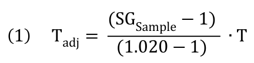
The corresponding adjusted DLadj would therefore be:
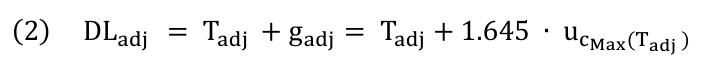
Where uc_Max (Tadj) Is the absolute uc_Max at Tadj, calculated as uc_Max(Tadj) = uc_Max (%) · Tadj. This formula for DLadj can then be simplified as:
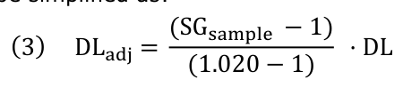
The DLadj shall be truncated to 2 significant figures and expressed without rounding up (e.g. a DLadj of 3.116 shall be expressed as 3.1).
p. 3
d. If this exogenous Threshold Substance is detected in conjunction with a prohibited diuretic or other masking agent (as specified in the Prohibited List), the confirmation of the Threshold Substance requires only the identification of the compound, not its quantification¹ . In such cases, both the exogenous Threshold Substance and the diuretic/masking agent shall be confirmed and reported as AAF by the Laboratory (the beta-2 agonist, which is prohibited at all times, i.e. both In- and Out-ofCompetition, shall be reported as an AAF if identified at any concentration in compliance with the effective TD IDCR [1]).
e. If this exogenous Threshold Substance is detected in conjunction with a prohibited diuretic or other masking agent (as specified in the Prohibited List), the confirmation of the Threshold Substance requires only the identification of the compound, not its quantification¹ . In such cases, the diuretic/masking agent shall be confirmed and reported as AAF by the Laboratory. The stimulant, which is prohibited In-Competition only, shall be reported as an AAF if identified, in compliance with the effective TD IDCR [1], at an estimated concentration greater than the reporting limit of 50 ng/mL (50% of the MRPL) established for stimulants in the TDMRPL [2].
f. 11-nor-∆9-tetrahydrocannabinol-9-carboxylic acid.
g. The Laboratory shall report cathine as an AAF when found at a urinary concentration greater than the DL. However, when pseudoephedrine is also detected in the Sample at concentrations below the DL, the estimated concentration of pseudoephedrine shall also be reported and a comment shall be made in the Test Report on whether the cathine finding may have resulted from the administration of pseudoephedrine. The decision about whether the cathine finding constitutes an Anti-doping Rule Violation shall be made during the results management process.
h. The Threshold concentration is based on the sum of the glucuronide conjugate (expressed as the free drug) and free drug concentrations.
i. Morphine at a urinary concentration greater than the DL shall be reported as an AAF. However, when applicable, a comment shall be made in the Test Report on whether the morphine finding may have resulted from the administration of a permitted substance such as codeine. The decision about whether this finding constitutes an Anti-doping Rule Violation shall be made during the results management process.
j. For endogenous Threshold Substances for which the T value has been established based on reference population statistics, the population T already incorporates the uncertainty of the measurements. Therefore, the T constitutes the DL.
k. Applicable when immunoassays are used for quantification of intact hCG.
l. Applicable when the LC-MS/MS method is used for quantification of heterodimeric hCG. Specific instructions on the measurement and reporting of hCG findings are provided in the WADA Technical Document on Reporting and Management of urinary hCG and LH findings in male Athletes [3].
Note: Human Growth Hormone (hGH) is also defined as a Threshold Substance. For the application of the hGH differential immunoassays and/or the hGH Biomarkers Method, the applicable values of uc Max and the corresponding DLs are specified in the applicable Technical Document [4] or Laboratory Guidelines [5].
The International Standard for Laboratories (ISL) [6] requires that quantitative results from Confirmation Procedures are based on the mean of three independent determinations. The resulting relative standard deviation (RSD, %) is to be consistent with the validation data. The uncertainty of the measurement of the Laboratory's measurement procedure shall be such as to ensure an AAF non-compliance decision in cases when the mean of the data obtained is above the corresponding DL in Table 1.
¹In cases where a diuretic or masking agent is detected in the Sample, the co-presence of an exogenous Threshold Substance shall be considered as an AAF (irrespective of the existence or not of an approved TUE for the diuretic/masking agent) unless there is an approved TUE for the exogenous Threshold Substance itself.
p. 4
2 Setting Decision Limits for Threshold Substances
Where a T has been established for a Prohibited Substance, the DL is the value of the result for that Prohibited Substance in a given Sample obtained using a validated measurement procedure above which it can be decided that T has been exceeded with a statistical confidence of at least 95%, and hence that an AAF is justified. This is illustrated in Figure 1.
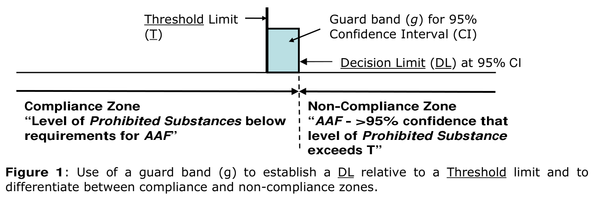
Figure 1: Use of a guard band (g) to establish a DL relative to a Threshold limit and to differentiate between compliance and non-compliance zones.
The value DL shall be calculated as the sum of the value T and the guard band (g), where g is calculated based on the relevant WADA maximum acceptable value (unit/mL) of the combined standard uncertainty (uc Max) given in Table 1, using a coverage factor k of 1.645 (95% coverage range, one-tailed normal distribution).
(4) DL = T + g
(5) g = k · uc Max, with k = 1.645 AAF > DL
When a value found in a Sample exceeds the T value, but is less than the DL, the Laboratory shall report this result as "Negative" and include a recommendation (e.g. in the opinion section of the Test Report) for the Result Management Authority to consider this result within its future "target and intelligence" test planning. This result shall not constitute an AAF regardless of the value of MU the Laboratory reports for the result.
Note: The compliance decision rule, applicable to assays used for quantification of endogenous Threshold Substances, for which the T have been established on reference population statistics (e.g. hCG, hGH differential immunoassays and hGH Biomarkers Method), do not require the inclusion of a guard band since the MU has already been incorporated into the T value.
p. 5
3 Reporting
3.1 Test Report
The concentration of a Threshold Substance in a Sample shall be reported in ADAMS (and/or Laboratory Test Report) as the mean value from triplicate determinations, rounded down (truncated) to the same number of decimal places as the applicable DL, to assess compliance with the DL and as a basis for reporting an AAF.
[For example, a finding for formoterol at 52.7 ng/mL shall be reported as "52 ng/mL"; a result for cathine at 7.57 µg/mL shall be reported as "7.5 µg/mL"; a result for ephedrine at 12.2 µg/mL shall be provided as "12 µg/mL"; a result for pseudoephedrine at 173.7 µg/mL shall be given as"173 µg/mL"; a result for morphine at 1.35 µg/mL shall be reported as "1.3 µg/mL" and a concentration for hCG of 7.38 IU/L shall be reported as "7.3 IU/L"].
The minimum requirements for reporting an AAF for a Threshold Substance are:
- the result (assigned and reported as stated above);
- a statement that the result exceeds (>) the relevant DL; and
- the relative uc (%) associated with a result at levels close to the T value as determined during the Confirmation Procedure method validation.
Provision of the information as described above is sufficient to meet the WADA requirements for reporting an AAF for a Threshold Substance.
[Reporting example for the Test Report:
The concentration of 'Prohibited Substance A' in the Sample, obtained using the Confirmation Procedure and stated in accordance with the reporting rules in WADA TD2017DL, is X (units). This exceeds the DL (after adjustment for the SG, if applicable) for A of Y (units). The relative combined standard uncertainty (uc %) estimated by the Laboratory for a result at the Threshold Z (after adjustment for the SG, if applicable) [units], is 'b' (%), which does not exceed the relative uc Max ('c', %) specified in WADA TD2017DL.
This result meets the requirements of WADA TD2017DL for an Adverse Analytical Finding for the presence of A in the Sample at a concentration greater than the Threshold (after adjustment for the SG, if applicable) of Z (units)].
3.2 Laboratory Documentation Package
The source of information for a decision regarding an AAF is the measurement result as determined by the Laboratory using its Confirmation Procedure. This information shall be included in the Laboratory Documentation Package. Reporting the result with the associated expanded MU using a coverage factor (k) of 2 is a common practice. This provides an expanded MU (U95%) for the result equivalent to the 95% coverage interval for the value of the Threshold Substance in the Sample based on a two-tailed normal distribution.
The Laboratory Documentation Package shall include the following information:
- If an adjustment for SG is necessary, the SG of the Sample, the adjusted Threshold and resulting adjusted DL shall be provided;
- A statement that the relative uc (%) for results at the Threshold does not exceed the maximum permissible relative uc Max (%) in Table 1 of TD2017DL or applicable Technical Document or Guidelines;
p. 6
- The Laboratory result for the Threshold Substance in the Sample (units), as determined and without truncation per TD2017DL, with the uc associated with the result. Generally this is provided by reporting the U95% (units 2 ) determined by the Laboratory based on a two-tailed 95% coverage interval (k = 2) and expressed as x ± U95%.
[Reporting example for the Documentation Package for an AAF:
The concentration of Prohibited Substance A in the Sample, obtained using the Confirmation Procedure and stated in accordance with the reporting rules in WADA TD2017DL, is X (units). This exceeds the DL (after adjustment for the SG, if applicable) for A of Y (units). The relative combined standard uncertainty (uc %) estimated by the Laboratory for a result at the Threshold Z (after adjustment for the SG, if applicable) [units], is 'b' (%), which does not exceed the relative uc Max ('c', %) specified in WADA TD2017DL.
This result meets the requirements of WADA TD2017DL for an Adverse Analytical Finding for the presence of A in the Sample at a concentration greater than the Threshold (after adjustment for the SG, if applicable) of Z (units)].
The Laboratory result for A including the associated expanded uncertainty U95% equivalent to the two-tailed 95% coverage interval (k = 2) is 'd ± e' (units)].
3.3 Interpretation Examples
3.3.1 Ephedrine is detected in a Sample at a concentration of 12.2 µg/mL using a measurement procedure where the relative uc is 3.6% for a result at the Threshold of 10 µg/mL. The standard uncertainty uc of the observed result, corresponding to a relative uc of 3.6%, is 0.44 µg/mL.
The result constitutes an AAF since the concentration of ephedrine in the Sample, assigned in accordance with the reporting rules established in section 3.1 above, is 12 µg/mL and therefore exceeds the relevant DL for ephedrine of 11 µg/mL. Such cases can be reported as follows:
[Test Report:
The concentration of ephedrine in the Sample, obtained using the Confirmation Procedure and stated in accordance with the reporting rules in WADA TD2017DL, is 12 µg/mL. This exceeds the relevant DL for ephedrine of 11 µg/mL. The relative combined standard uncertainty (uc %) estimated by the Laboratory for a result at the Threshold (10 µg/mL) is 3.6 %. This result meets the requirements of WADA TD2017DL for an Adverse Analytical Finding for the presence of ephedrine in the Sample at a concentration greater than 10 µg/mL].
[Laboratory Documentation Package:
The concentration of ephedrine in the Sample, obtained using the Confirmation Procedure and stated in accordance with the reporting rules in WADA TD2017DL, is 12 µg/mL. This exceeds the relevant DL for ephedrine of 11 µg/mL. The relative combined standard uncertainty (uc %) estimated by the Laboratory for a result at the Threshold (10 µg/mL) is 3.6 %.
The relative uc (3.6%) does not exceed the relative uc Max (5 %) specified in the TD2017DL for concentrations of ephedrine at the Threshold.
²expressed to 2 significant figures
p. 7
The result for ephedrine including the associated expanded uncertainty U95% equivalent to the two-tailed 95% coverage interval (k = 2) is 12.2 ± 0.88 µg/mL.
This result meets the requirements of WADA TD2017DL for an Adverse Analytical Finding for the presence of ephedrine in the Sample at a concentration greater than 10 µg/mL].
3.3.2 Morphine is detected in a Sample at a concentration of 1.38 µg/mL using a measurement procedure where the relative uc is 14% for a result at the Threshold of 1.0 µg/mL. The standard uncertainty uc of the observed result, corresponding to a relative uc of 14%, is 0.19 µg/mL.
This result does not constitute an AAF, since the concentration of morphine in the Sample, assigned in accordance with the reporting rules established in section 3.1 above, is 1.3 µg/mL and therefore does not exceed the relevant DL for morphine of 1.3 µg/mL. Since the concentration of morphine is greater than the T value, but does not exceed the DL, the Laboratory shall report this result as "Negative" and include a recommendation (e.g. in the opinion section of the Test Report) for the Result Management Authority to consider this result within its future "target and intelligence" test planning.
- Note: When the result of a Prohibited Substance in a Sample is moderately in excess of the DL, the expanded uncertainty U95% (k = 2) for the Laboratory result may extend below the DL. It is important to note that this shall not invalidate an AAF. The appropriate statistical comparison of the Laboratory value with the T (not the DL) using a single-tailed distribution (k = 1.645) coverage factor when the standard uncertainty of the result is taken into consideration, shows that the result is consistent at greater than 95% confidence with a level of the Prohibited Substance in the Sample in excess of the T value.
p. 8
APPENDIX 1
1. Estimating Measurement Uncertainty (MU)
The International Vocabulary of Metrology (ISO/IEC Guide 99:2007) [7] formally defines MU as a parameter characterizing the dispersion of quantity values attributed to a measurand.
More simply stated, the combined standard MU of a result [uc(y)] is equivalent to an estimate of the standard deviation (SD) associated with the result (y) obtained for the sample under analysis. Multiplication of uc(y) by a coverage factor (k) gives the expanded MU (U) associated with result (y). For a given sample, the combination of the result (y) and its associated U specifies a coverage range within which the true value for the sample is expected to be found, at a stated level of coverage. For most doping control purposes, a value U corresponding to a 95% coverage range is the minimum requirement for the reporting of results.
Accreditation to ISO/IEC 17025 [8], as well as compliance with the ISL [6], requires that Laboratories evaluate the MU associated with their results and report the uncertainty where relevant. ISO/IEC 17025 recommends that MU be estimated using an approach consistent with the principles described in the ISO/IEC Guide to the Expression of Uncertainty in Measurement (GUM)[9].
The minimum requirements that shall be applied to any approach for the estimation of MU of quantitative testing results are:
- a comprehensive uncertainty evaluation which accounts for all relevant sources of measurement error;
- uncertainties arising from random and systematic effects shall be treated alike, i.e. expressed and combined as variances of associated probability distributions;
- evaluation of uncertainty performed by statistical analysis of measurement results (Type A) or by alternative techniques, based on other data / information (Type B), are recognized as equally valid tools; and
- the uncertainties associated with the final results be expressed either as SD (standard uncertainty, uc) or as a multiple of SD (expanded uncertainty, U) using a specified numerical factor (coverage factor).
The examples cited in the GUM concentrate on one method, referred to elsewhere as the "analytical", "modelling" or "bottom-up" approach, for uncertainty evaluation. The basic GUM principles also allow for more global approaches for estimating the sources of MU, generally referred to as "top-down" or "empirical" approaches, using data derived from intra- or inter-laboratory method validation studies, internal quality control procedures or the results of EQAS. These approaches are all potentially compliant with the GUM principles provided the minimum requirements listed above are adequately (but not necessarily exhaustively) addressed and the MU estimate obtained is suitable for the intended purpose of the measurement. Various references are available which give worked examples of both the "bottom-up" and "top-down" approaches to MU estimation [10, 11].
p. 9
Four separate approaches applicable for the estimation of the combined standard measurement uncertainty uc(y) associated with an individual result (y) are described in more detail below. They use respectively:
A. a modeling approach based on the principles described in the GUM;
B. "in-house" method validation data combined with quality control data;
C. data derived from collaborative trials;
D. data derived from EQAS.
The strategy used for uncertainty estimation does not have to follow one exclusive model and in practice the combination of data obtained from two or more different approaches can be employed.
All of these approaches are GUM compliant and are considered acceptable. Any of these approaches may be employed by a Laboratory to estimate the MU associated with their measurement results, provided the Laboratory estimate does not exceed the maximum acceptable (target) MU associated with the determination of specific Threshold Substances that have been established by WADA. These maximum acceptable MU are conservative estimates derived from EQAS performance data.
A. Modeling approach
In this case, the Laboratory develops a measurement equation or model in which result (y) is a function of independent input parameters x₁, x₂, x3….xₙ that all influence the measurement result.
If the mathematical model is a combination of addition/subtraction and multiplication/addition operations then an appropriate quadratic combination is used to calculate the uc(y). This approach is also referred to variously as the "bottom-up" or "GUM" approach.
If the equation is in the form:
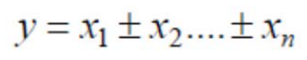
Then the uc(y) associated with the result is:
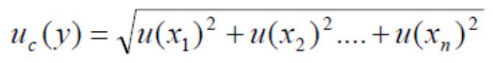
If the equation is of the form:
p. 10
Then the uc(y) associated with the result is given by:
Note: The uncertainty budget derived using this approach indicates the relative magnitude of the various sources of uncertainty but carries the risk of missing a contributing factor which may significantly affect the overall estimate of MU. Nonetheless, it is a valuable means of establishing where the major sources of uncertainty are found in an analytical procedure and for identifying where efforts should be concentrated if a reduction is desired in the overall MU of results obtained through use of the method.
B. Intra-laboratory data approach
This approach assumes the method has undergone intra-Laboratory validation including an estimation of the within-Laboratory Reproducibility (also variously referred to as the Intermediate Precision or imprecision). It is based on a three component measurement model:
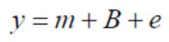
The result (y) is the sum under Reproducibility conditions of the measurement method mean (m), an estimate of method bias (B) and a random error contribution (e) and the uc(y) associated with the result is given by:
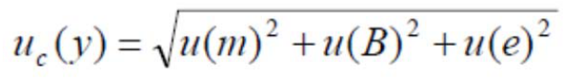
The estimate of within-Laboratory reproducibility or Intermediate Precision of results, usually obtained from intra-Laboratory QC and method validation data, can be expressed as a standard deviation (sw). It provides a fit-for-purpose estimate of the uncertainty contribution from the u(m) and u(e) terms and the "internally visible" bias components (BInt).
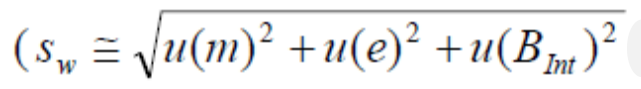
If (y) is the result of a single analysis, the equation for calculating the standard uncertainty associated with the result simplifies to:
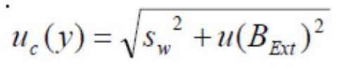
where BExt is an estimate for bias not accounted for from intra-Laboratory studies.
p. 11
Where (y) is the average of n replicate analyses:
Note: When appropriately applied this approach, as with the other empirical approaches, is as valid as the modeling approach, and should provide a conservative but pragmatic estimation of MU.
C. Inter-Laboratory method performance data approach
Where a Laboratory has participated in an inter-Laboratory comparison to test a standard method, or has demonstrated appropriate implementation of a literature method validated using such an approach, the inter-Laboratory SD of the method (sR) calculated from the results of the comparison can be used as an estimate of the combined standard uncertainty of an individual result obtained using the method:
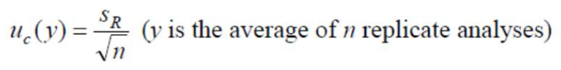
This approach is applicable, in practice, only when a validation study includes a multi-centre, inter-Laboratory trial conducted to a pre-defined experimental protocol.
Note: The major sources of variability can be assessed by inter-laboratory studies and provide estimates of Repeatability standard deviation (sᵣ), Reproducibility (sR) and Bias (b) of the method (with respect to a known reference value). The Reproducibility can be used as an estimate of the combined standard uncertainty (uc) associated with an individual measurement result obtained using this method.
D. EQAS participation approach
Data obtained from ongoing participation in an EQAS allows, in some cases, for the calculation of a performance characteristic of the ensemble of methods used by participants that can serve, in the absence of a properly constituted inter-Laboratory study, as a conservative estimate of the Reproducibility (sR) of the method used by an individual Laboratory. It is mostly in the latter sense that the term sR is used in the current draft. This estimate is only valid when:
- the values reported by participants in the EQAS round (after exclusion of outliers) fall into a normal Gaussian distribution;
- the intra-Laboratory Repeatability (sᵣ) for the method is small relative to the variation in the participant results;
- uncertainty contributions from instability or heterogeneity of the EQAS sample are negligible;
- the matrices utilised correspond closely to those encountered in routine analytical conditions (i.e. "representative" matrices are used to prepare EQAS materials).
p. 12
In this case the SD of the participants' results after exclusion of outliers can be used as an estimate of the uc associated with a result obtained by the method. This value can then be applied as described for the sR estimate in section 1.C above.
Note: As noted in section 1.C, the Reproducibility (sR) estimate can be used as a conservative estimate of the combined standard MU associated with a result (sR ≈ uc). Moreover, a Laboratory can, by its participation in the WADA EQAS, check and demonstrate the validity of its chosen approach to uncertainty evaluation (see Section 3).
2. METHOD DEVELOPMENT AND VALIDATION
Laboratories must employ a validated procedure, which when taking into account the MU at the 95% coverage level (calculated at the T value), assures an AAF or ATF when the mean measured value exceeds the DL.
When developing the method, before validation, a Laboratory should consider all aspects of the procedure and identify the critical performance characteristics that need to be optimised in order to ensure that the uncertainty of a result obtained using the method is within the criteria set by WADA.
Validation is essential for the application of an analytical procedure and for accreditation of the Laboratory to ISO/IEC 17025 (2005). The performance characteristics established during the validation process can be used as the basis for estimates of the MU associated with the results obtained using the method.
More detailed descriptions of the general principles pertaining to method validation are available in various guidance documents [12-15] and will not be described in detail. The characteristics listed below (Table 2, Column 1) are provided as an example of the minimum areas extracted from the validation data that should be investigated as part of any method validation process to estimate the combined standard uncertainty. The need to undertake an estimation of the MU using the ISO component-by-component approach is not necessary if the other forms of data are available and used to estimate the uncertainty. Since the methods employed must be validated, the following approach is the preferred option.
| Method Characteristic | - Source of Data |
|---|---|
| Calibration | - 50% to at least 200% of the T concentration in urine (at least 5 calibration points across the linear range under investigation and at least four replicates per calibration point are recommended); - 2 individually prepared stock standard solutions and 2 dilution series from each; - Least squares regression analysis of the response versus concentration to calculate the method's regression coefficient over this range. |
| Repeatability | - At least 10 repeats of a suitable CRM/QC sample(s) or a 'spiked' urine/blood (serum, plasma) of known concentration/ratio/score at or close to the T value. The solutions to be analysed by the same analyst and equipment, in the same Laboratory on a short timescale. The SD of the results is the method Repeatability (sᵣ) at that concentration. |
| Intermediate Precision | - At least 10 individually prepared test solutions prepared preferably from control urine/blood (serum, plasma) or a CRM or QC sample(s) of concentration/ratio/score that is close to the T value. Analysed in the same Laboratory on different days using (where possible) different operators and different equipment. The SD of the results is the Intermediate Precision (sw) estimate for the method at that concentration. |
| Recovery | - Determine the difference or method bias (∆ᵢ) between the mean measured value for test results obtained by analysis of a relevant CRM, QC sample or spiked matrix and the reference values for these samples. - Where information is available from n separate bias determinations calculate the root mean square of the bias (RMSbias). - If the RMSbias is used to estimate the standard MU of results obtained using the method, a contribution due to the uncertainty associated with the reference values used to establish the method bias must also be included. |
| Ruggedness | - Where deemed necessary, estimate the influence of parameters (especially variation in matrix) that are difficult to investigate in basic validation studies. |
p. 13
In cases where the method validation process is considered to have included the influence effects of all relevant parameters then a fit-for-purpose estimate of the uc(y) for an individual result (y) can usually be obtained by quadratic combination of the Intermediate Precision (sw) value and the bias uncertainty estimate.
| Combined uncertainty | 2 2 bias w c RMS s u + = |
|---|---|
| Expanded uncertainty | U95% = k x uc (k=2) * |
*WADA has determined that use of a coverage factor of *k=*2 (for a two-tailed distribution) establishing the expanded uncertainty U associated with a result (y) at an approximate coverage level of 95% is appropriate for anti-doping purposes.
If the procedure is to be applied over a wide concentration range, which is typically not the case for the purposes of anti-doping Testing, uncertainty of results obtained using the method should be determined at three concentration levels (low, medium and high). For wide concentration ranges it is not unusual to find that the relative uncertainties for individual results decrease as the concentration of the analyte in the sample increases; however, for assessing a doping offence it is sufficient to concentrate on the uncertainty associated with the performance of the method at the Threshold concentration.
Having established the expanded uncertainty U associated with results obtained using their method, a Laboratory shall regularly (i.e. with every analysis of a Threshold Substance) run a control sample at a concentration at or near the Threshold concentration (preferably containing the analyte of interest at or near the T value, if available) and record the values obtained, preferably on a control chart¹⁰ with acceptance limits based on the validation data, to ensure the validity of the values obtained and to follow trends.
p. 14
A worked example taken from an environmental testing application has been published [9] illustrating how the combination of intra-Laboratory validation, quality control data and a bias estimate obtained from regular participation in a EQAS can be used to obtain an estimate of the MU associated with results at defined concentrations.
3. VERIFICATION OF MEASUREMENT UNCERTAINTY
For some ratios or scores (obtained from the measured concentrations of, for example, two analytes) a similar approach, as described above, applies but it is necessary to take into account the combined uncertainties of the values obtained for both analytes when calculating the expanded uncertainty, U.
Regardless of the approach employed by a Laboratory to estimate the MU for the results it obtains using a particular analytical procedure, it is important that this MU estimate be validated and its veracity monitored in an ongoing manner. This can be done by regular comparison with an appropriate control sample, preferably a Certified Reference Material (CRM), if available, and/or through evaluation of method performance using EQAS data.
The MU for a particular analytical procedure, estimated by a Laboratory can also be checked by comparison to data generated from an appropriate EQAS by employing the Eₙ number.
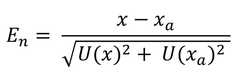
Where xₐ is the assigned value for the EQAS study, x is the Laboratory result, and U(xₐ) and U(x) are respectively the expanded uncertainties associated with each result. It is considered that when |Eₙ| is:
- Close to one (1): then the MU is correctly estimated provided it is less than the maximum acceptable MU required by WADA;
- Repeatedly less than one (1): then the MU is probably overestimated. This could still be acceptable provided that the reported MU is less than the target MU (maximum uncertainty permitted). Nonetheless, the MU for this particular analytical procedure should be re-assessed;
- Repeatedly greater than one (1): the MU is probably underestimated and in this case the reason for the high Eₙ value should be re-assessed. If necessary, steps should be taken to re-evaluate the MU.
Whenever there is a change in the analytical procedure (extraction step, derivatization conditions, internal standard, etc.) a re-validation of the procedure and a reassessment of MU of results obtained using the altered procedure is required.
p. 15
It is necessary to check that the analytical procedure is still fit-for-purpose (e.g. the MU estimated by the Laboratory for a particular analytical procedure is below the maximum acceptable MU given in Table 1 above).
4 REFERENCES
-
WADA Technical Document TDIDCR: Minimum Criteria for Chromatographic-Mass Spectrometric Confirmation of the Identity of Analytes for Doping Control Purposes. https://www.wada-ama.org/en/what-we-do/science-medical/laboratories
-
WADA Technical Document TDMRPL: Minimum Required Performance Levels for Dtecting and Identification of Non-Threshold Substances. https://www.wada-ama.org/en/what-we-do/science-medical/laboratories
-
WADA Technical Document TDCG/LH: Reporting and Management of urinary hCG and LH findings in male Athletes (current version). https://www.wada-ama.org/en/what-we-do/science-medical/laboratories
-
WADA Technical Document TDGH (current version): human Growth Hormone (hGH) Isoform Differential Immunoassays for Doping Control Analyses. https://www.wada-ama.org/en/what-we-do/science-medical/laboratories
-
WADA Guidelines on human Growth Hormone Biomarkers Test for Doping Control Analyses
(current version).
https://www.wada-ama.org/en/what-we-do/science-medical/laboratories
-
The World Anti-Doping Code International Standard for Laboratories. https://www.wada-ama.org/en/what-we-do/science-medical/laboratories
-
ISO/IEC Guide 99:2007. International Vocabulary of Metrology - Basic and General Concepts and Associated Terms (VIM) (2007). http://www.bipm.org/en/publications/guides/8.ISO/IEC 17025:2005. General Requirements for the competence of testing and calibration laboratories (2005).
http://www.iso.org/iso/catalogue_detail.htm?csnumber=39883
-
ISO/IEC Guide 98-3:2008. Evaluation of Measurement Data - Guide to the expression of uncertainty in measurement (GUM) (2008). http://www.bipm.org/en/publications/guides/10.Eurolab Technical Report No. 1/2007. Measurement Uncertainty revisited: Alternative approaches to uncertainty evaluation (2007). http://www.eurolab.org/documents/1-2007.pdf
-
NORDTEST Technical Report 537. Handbook for calculation of measurement uncertainty in Environmental Laboratories (2004). http://www.nordtest.info/index.php/technical-reports/item/handbook-for-calculation-of-measurementuncertainty-in-environmental-laboratories-nt-tr-537-edition-3.html
-
Eurachem Guide. The Fitness for Purpose of Analytical Methods (2014). https://www.eurachem.org/index.php/publications/guides/mv
-
ISO 21748: 2010. Guide to the Use of Repeatability, Reproducibility and Trueness Estimates in Measurement Uncertainty Estimation. ISO, Geneva (2010). https://www.iso.org/obp/ui/#iso:std:iso:21748:ed-1:v1:en
p. 16
- EURACHEM/CITAC Guide CG4. Quantifying Uncertainty in Analytical Measurement. Third Edition, SLR Ellison and A Williams (Ed.) (2012).
https://www.eurachem.org/index.php/publications/guides/quam
- EURACHEM/CITAC Guide. Use of Uncertainty Information in Compliance Assessment. First Edition, SLR Ellison and A Williams (Ed.) (2007). https://www.eurachem.org/index.php/publications/guides/uncertcompliance
Retrieved on 25 November 2026 from https://www.wada-ama.org/sites/default/files/resources/files/wada-td2017dl-v2-en_0.pdf